在桌面創一個資料夾（名稱隨意，此例為 Peipei）
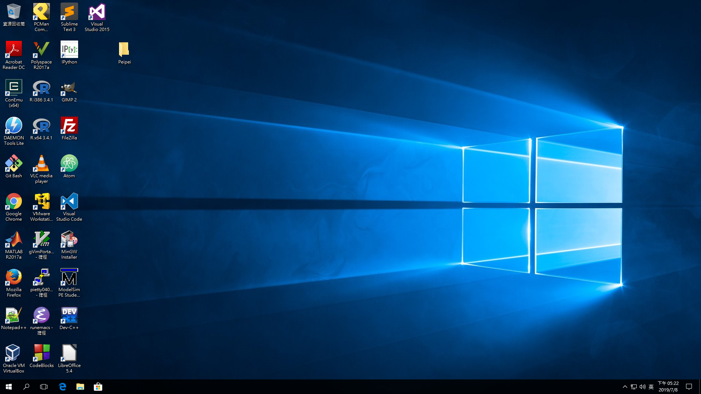
點進去資料夾，在位址列複製位址 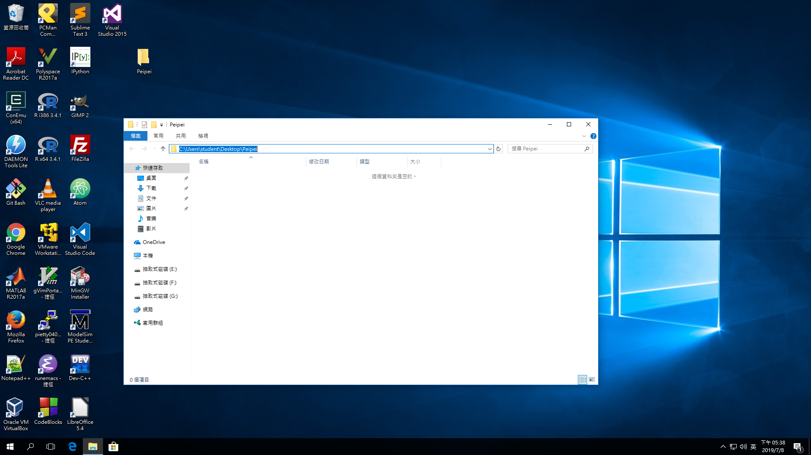
開啟 Anaconda Prompt
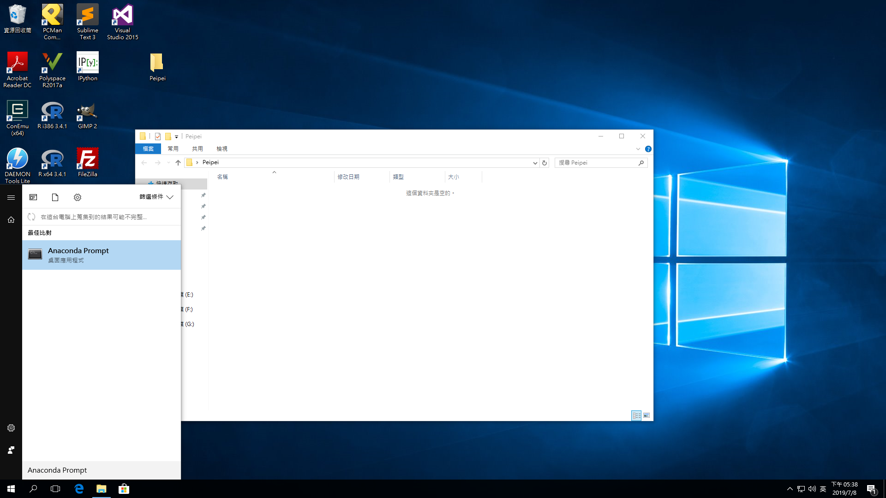
並輸入 cd 後貼上位址
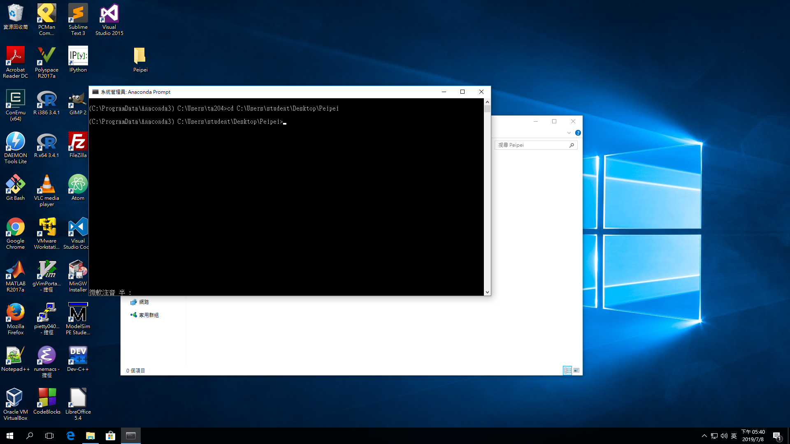
執行 python
直接執行直譯器
python
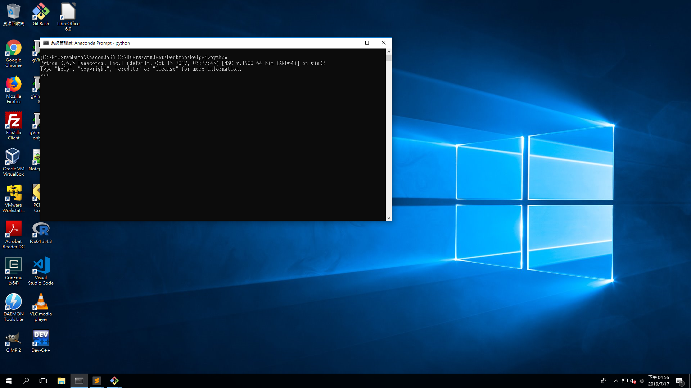
執行一個 .py 檔
xxxxxxxxxxpython xxx.pydir：列出資料夾所有檔案cd Directory：切換資料夾到 Directory用鼠標將你創的資料夾滑進去 Sublime Text 3 的 icon 中。 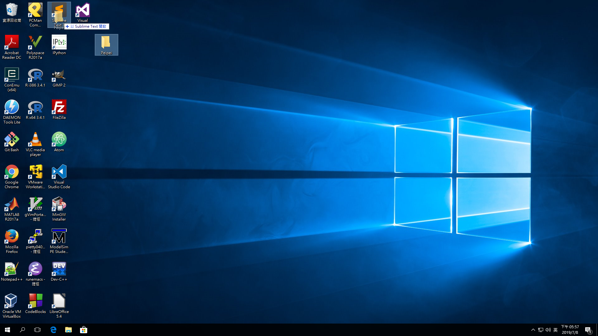
設定
在上方點選 “Preferences > Setting” 會開啟一個視窗，在右邊的視窗貼上以下內容：
xxxxxxxxxx{"font_size": 16,"translate_tabs_to_spaces": true}
之後存檔後便可以設定完成 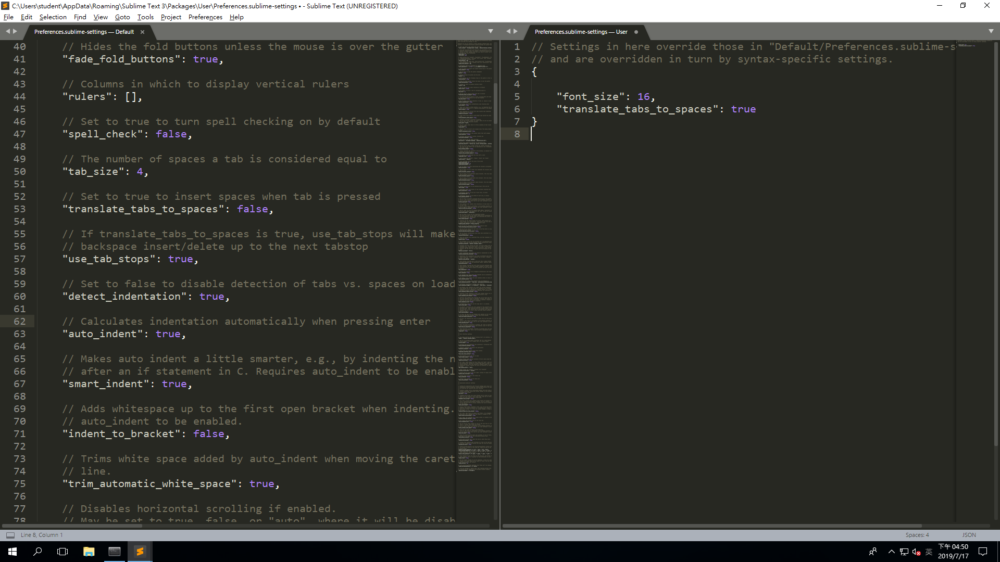
在左側 side bar 的資料夾上按右鍵，點選 “New File”
註：若無左側 side bar 請在上方的 view>side bar 點選 “Show Side Bar”
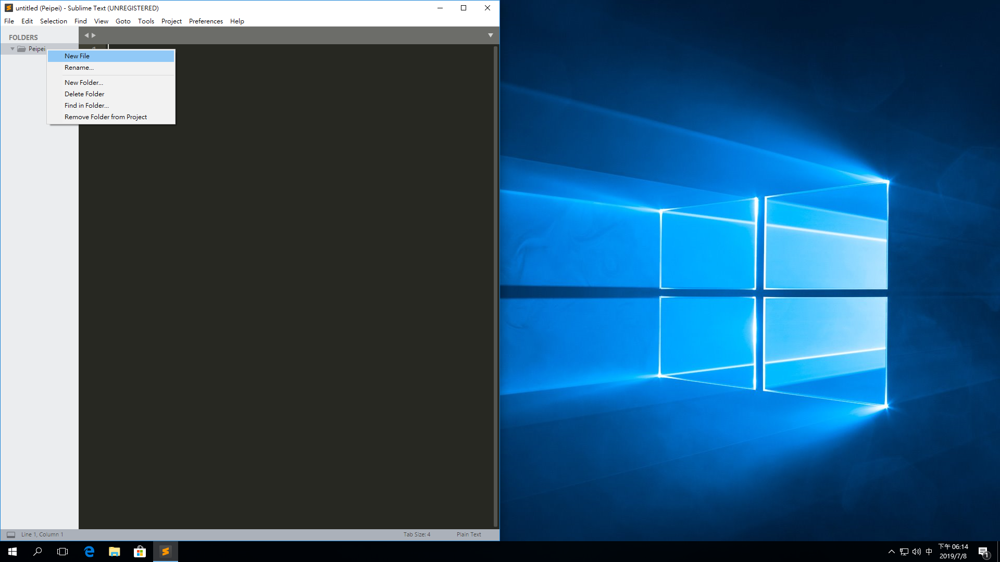
之後按下 ctrl + s 存檔，檔名的最後請加上 .py
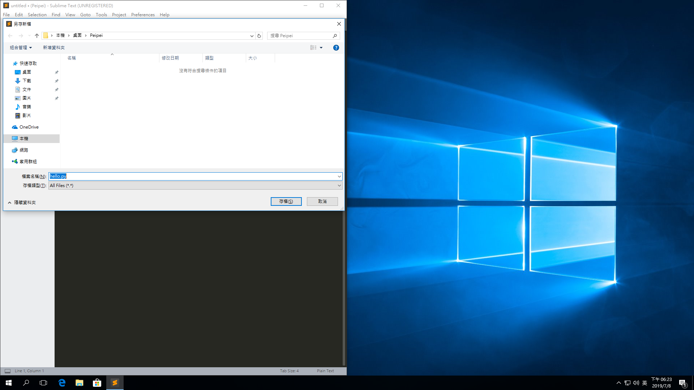
xxxxxxxxxxprint('Hello World!!!')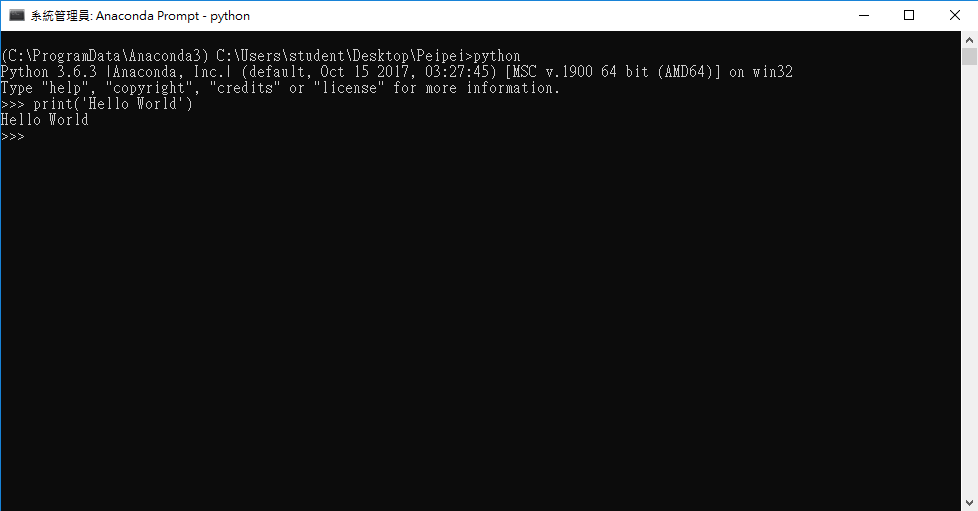
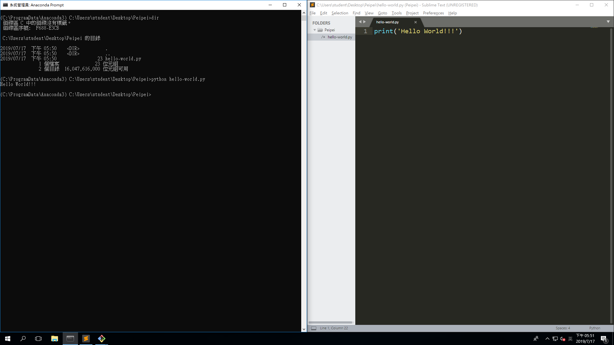